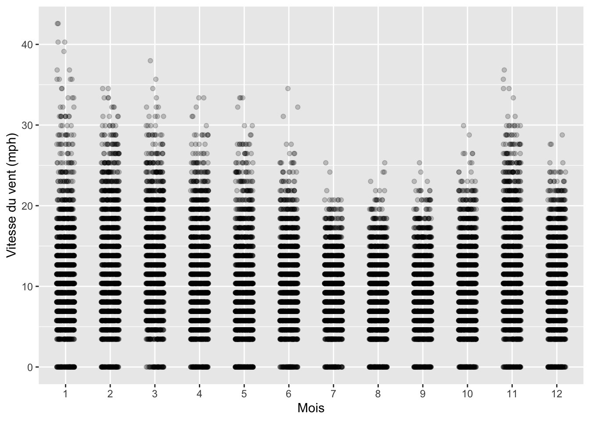
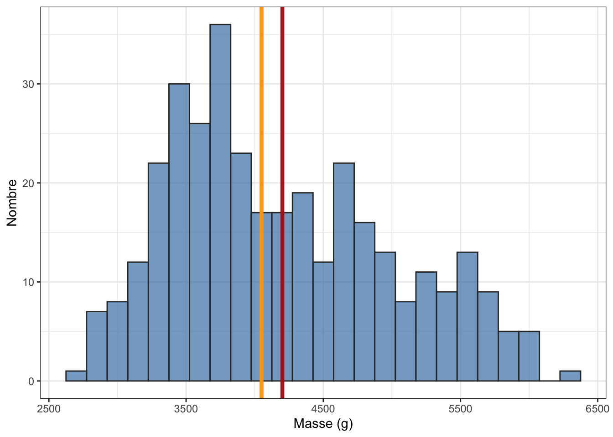
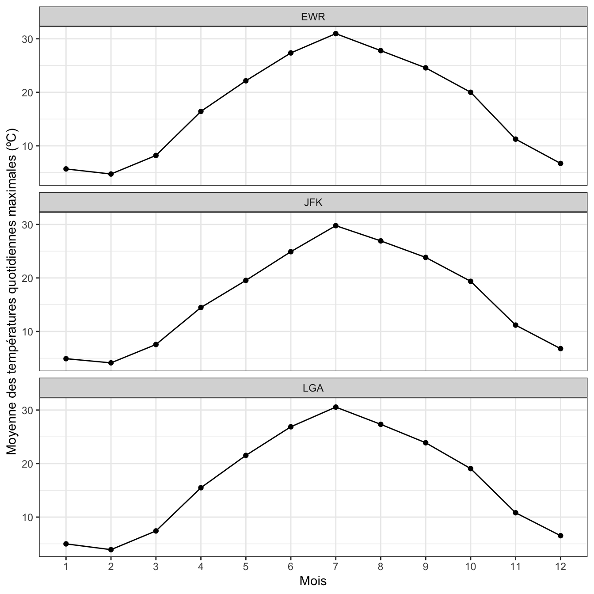
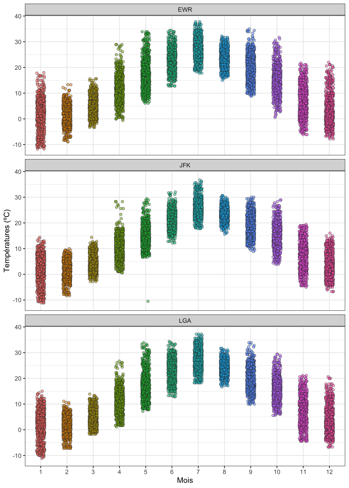
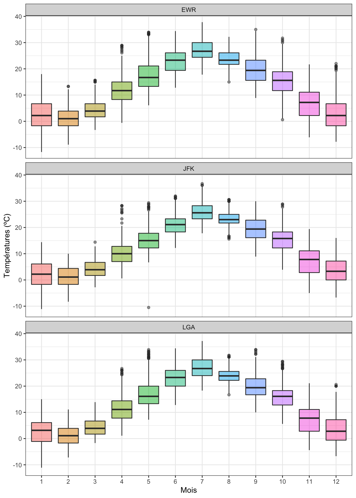
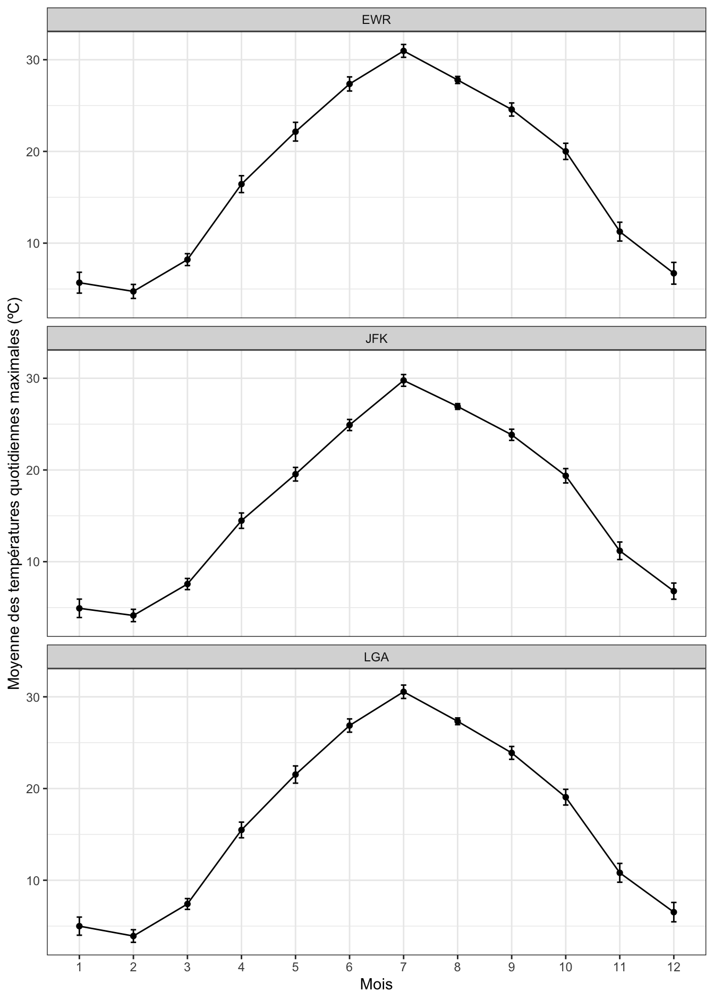
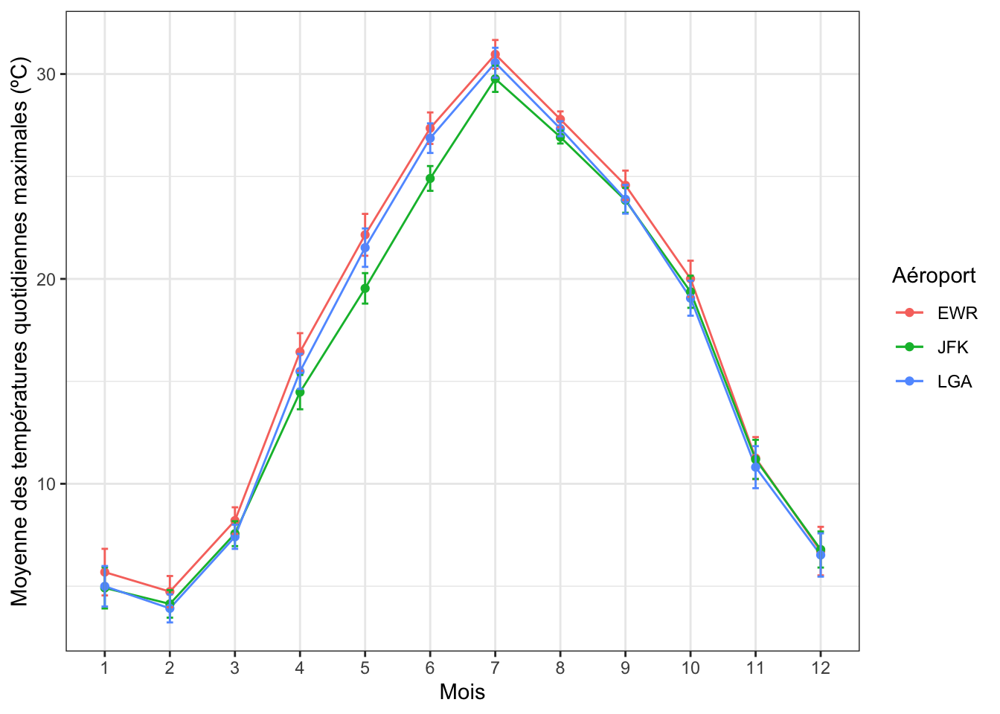

library(tidyverse)
library(skimr)
library(palmerpenguins)
library(nycflights13)1.1 Pré-requis
La première étape de toute analyse de données est l’exploration. Avant de se lancer dans des tests statistiques et des procédures complexes, et à supposer que les données dont vous disposez sont déjà dans un format approprié, il est toujours très utile de :
explorer visuellement les données dont on dispose en faisant des graphiques nombreux et variés, afin de comprendre, notamment quelle est la distribution des variables numériques, quelles sont les catégories les plus représentées pour les variables qualitatives (ou facteurs), quelles sont les relations les plus marquantes entre variables numériques et/ou catégorielles, etc. Vous avez déjà appris, au semestre 3, comment produire toutes sortes de graphiques avec le package
ggplot2. Si vous avez besoin de revoir les bases, c’est là que ça se passeexplorer les données en calculant des indices de statistiques descriptives. Ces indices relèvent en général de 2 catégories : les indices de position (e.g. moyennes, médianes…) et les indices de dispersion (e.g. variance, écart-type, intervalle inter-quartiles…). Nous allons voir dans ce chapitre comment calculer ces indices dans plusieurs situations, notamment lorsque l’on souhaite les calculer pour plusieurs sous-groupes d’un jeu de données
Nous verrons également dans ce chapitre comment calculer des indices d’incertitude. Attention, il ne faut pas confondre indices de dispersion et indices d’incertitude. Nous y reviendrons plus loin.
Afin d’explorer ces questions, nous aurons besoin des packages suivants :
Les packages du tidyverse (Wickham 2022) permettent de manipuler facilement des tableaux de données et de réaliser des graphiques. Charger le tidyverse permet d’accéder, entre autres, aux packages readr (Wickham, Hester, et Bryan 2022), pour importer facilement des fichiers .csv au format tibble, dplyr (Wickham, François, et al. 2022) pour manipuler des tableaux de données ou encore ggplot2 (Wickham, Chang, et al. 2022) pour produire des graphiques. Le package skimr (Waring et al. 2022) permet de calculer des résumés de données très informatifs. Les packages palmerpenguins (Horst, Hill, et Gorman 2022) et nycflights13 (Wickham 2021) fournissent des jeux de données qui seront faciles à manipuler pour illustrer ce chapitre (et les suivants).
Attention, pensez à installer ces packages avant de les charger en mémoire. Si vous ne savez plus comment faire, consultez d’urgence la section dédiée au package du livre en ligne de Biométrie du semestre 3.
De même, pour travailler dans de bonnes conditions, créez un nouveau dossier sur votre ordinateur, créez un Rproject et un script dans ce dossier et travaillez systématiquement dans votre script. Là encore, consultez le livre en ligne du semestre 3 si vous ne savez plus comment faire.
1.2 Créer des résumés avec les fonctions group_by() et summarise()
Comme nous l’avons vu au semestre 3, le package dplyr fournit plusieurs fonctions qui portent le nom de verbes simples et qui permettent d’effectuer des manipulations simples mais qui peuvent devenir très puissantes lorsqu’on les combine. Nous avons ainsi vu les fonctions suivantes :
select(): pour sélectionner ou exclure certaines colonnes (variables) d’un tableau de donnéesfilter(): pour trier des lignes d’un tableau de données selon des critères ou conditions choisis par l’utilisateurmutate(): pour transformer des variables existantes, ou pour créer de nouvelles colonnes dans un tableau de donnéesarrange(): pour trier des tableaux de données par ordre croissants ou décroissants
Si vous ne savez plus comment utiliser ces fonctions, relisez le chapitre 4 du livre en ligne de Biométrie du semestre 3.
À ces 4 verbes, on ajoute en général les 3 suivants :
summarise(): pour créer des résumés de données à partir des colonnes d’un tableaugroup_by(): pour effectuer des opérations pour chaque niveau d’un facteur (ou modalité d’une variable catégorielle)count(): pour compter le nombre d’observations pour chaque niveau d’un facteur (ou modalité d’une variable catégorielle)
Voyons comment on utilise ces fonctions pour calculer des indices de statistiques descriptives pour les variables du tableau penguins :
# affichage du tableau
penguins# A tibble: 344 × 8
species island bill_length_mm bill_depth_mm flipper_…¹ body_…² sex year
<fct> <fct> <dbl> <dbl> <int> <int> <fct> <int>
1 Adelie Torgersen 39.1 18.7 181 3750 male 2007
2 Adelie Torgersen 39.5 17.4 186 3800 fema… 2007
3 Adelie Torgersen 40.3 18 195 3250 fema… 2007
4 Adelie Torgersen NA NA NA NA <NA> 2007
5 Adelie Torgersen 36.7 19.3 193 3450 fema… 2007
6 Adelie Torgersen 39.3 20.6 190 3650 male 2007
7 Adelie Torgersen 38.9 17.8 181 3625 fema… 2007
8 Adelie Torgersen 39.2 19.6 195 4675 male 2007
9 Adelie Torgersen 34.1 18.1 193 3475 <NA> 2007
10 Adelie Torgersen 42 20.2 190 4250 <NA> 2007
# … with 334 more rows, and abbreviated variable names ¹flipper_length_mm,
# ²body_mass_g1.2.1 Principe de la fonction summarise()


summarise() tiré de la ‘cheatsheet’ de dplyr et tidyrLa Figure 1.1 ci-dessus indique comment travaille la fonction summarise() : elle prend plusieurs valeurs (potentiellement, un très grand nombre) et les réduit à une unique valeur qui les résume. Lorsque l’on applique cette démarche à plusieurs colonnes d’un tableau, on obtient un tableau qui ne contient plus qu’une unique ligne de résumé.
La valeur qui résume les données est choisie par l’utilisateur. Il peut s’agir par exemple d’un calcul moyenne ou de variance, il peut s’agir de calculer une somme, ou d’extraire la valeur maximale ou minimale, ou encore, il peut tout simplement s’agir de déterminer un nombre d’observations.
Ainsi, pour connaître la moyenne et l’écart-type de la longueur du bec des manchots de l’île de Palmer, il suffit d’utiliser le tableau penguins du package palmerpenguins et sa variable bill_length_mm que nous avons déjà utilisés au semestre 3 :
penguins %>%
summarise(moyenne = mean(bill_length_mm),
ecart_type = sd(bill_length_mm))# A tibble: 1 × 2
moyenne ecart_type
<dbl> <dbl>
1 NA NALes fonctions mean() et sd() permettent de calculer une moyenne et un écart-type respectivement. Ici, les valeurs retournées sont NA car 2 individus n’ont pas été mesurés, et le tableau contient donc des valeurs manquantes :
penguins %>%
filter(is.na(bill_length_mm))# A tibble: 2 × 8
species island bill_length_mm bill_depth_mm flipper_l…¹ body_…² sex year
<fct> <fct> <dbl> <dbl> <int> <int> <fct> <int>
1 Adelie Torgersen NA NA NA NA <NA> 2007
2 Gentoo Biscoe NA NA NA NA <NA> 2009
# … with abbreviated variable names ¹flipper_length_mm, ²body_mass_gPour obtenir les valeurs souhaitées, il faut indiquer à R d’exclure les valeurs manquantes lors des calculs de moyenne et écart-types :
penguins %>%
summarise(moyenne = mean(bill_length_mm, na.rm = TRUE),
ecart_type = sd(bill_length_mm, na.rm = TRUE))# A tibble: 1 × 2
moyenne ecart_type
<dbl> <dbl>
1 43.9 5.46La longueur moyenne du bec des manchots est donc de 43.9 millimètres et l’écart-type vaut 5.5 millimètres.
La fonction summarise() permet donc de calculer des indices statistiques variés, et sur plusieurs variables à la fois. Par exemple. pour calculer les moyennes, médianes, minima et maxima des longueurs de nageoires et de masses corporelles, on peut procéder ainsi :
penguins %>%
summarise(moy_flip = mean(flipper_length_mm, na.rm = TRUE),
med_flip = median(flipper_length_mm, na.rm = TRUE),
min_flip = min(flipper_length_mm, na.rm = TRUE),
max_flip = max(flipper_length_mm, na.rm = TRUE),
moy_mass = mean(body_mass_g, na.rm = TRUE),
med_mass = median(body_mass_g, na.rm = TRUE),
min_mass = min(body_mass_g, na.rm = TRUE),
max_mass = max(body_mass_g, na.rm = TRUE))# A tibble: 1 × 8
moy_flip med_flip min_flip max_flip moy_mass med_mass min_mass max_mass
<dbl> <dbl> <int> <int> <dbl> <dbl> <int> <int>
1 201. 197 172 231 4202. 4050 2700 6300La fonction summarise() est donc très utile pour produire des résumés informatifs des données, mais nos exemples ne sont ici pas très pertinents puisque nous avons jusqu’ici calculé des indices sans distinguer les espèces. Si les 3 espèces de manchots ont des caractéristiques très différentes, calculer des moyennes toutes espèces confondues n’a pas de sens. Voyons maintenant comment obtenir ces même indices pour chaque espèce.
1.2.2 Intérêt de la fonction group_by()
La fonction summarise() devient particulièrement puissante lorsqu’elle est combinée avec la fonction group_by() :

group_by() travaillant de concert avec summarise(), tiré de la ‘cheatsheet’ de dplyr et tidyrComme son nom l’indique, la fonction group_by() permet de créer des sous-groupes dans un tableau, afin que le résumé des données soit calculé pour chacun des sous-groupes plutôt que sur l’ensemble du tableau. En ce sens, son fonctionnement est analogue à celui des facets de ggplot2 qui permettent de scinder les données d’un graphique en plusieurs sous-groupes.
Pour revenir à l’exemple de la longueur du bec des manchots, imaginons que nous souhaitions calculer les moyennes et les écart-types pour chacune des trois espèces. Voilà comment procéder :
penguins %>%
group_by(species) %>%
summarise(moyenne = mean(bill_length_mm, na.rm = TRUE),
ecart_type = sd(bill_length_mm, na.rm = TRUE))# A tibble: 3 × 3
species moyenne ecart_type
<fct> <dbl> <dbl>
1 Adelie 38.8 2.66
2 Chinstrap 48.8 3.34
3 Gentoo 47.5 3.08Ici, les étapes sont les suivantes :
- On prend le tableau
penguins, puis - On groupe les données selon la variable
species, puis - On résume les données groupées sous la forme de moyennes et d’écart-types
Là où nous avions auparavant une seule valeur de moyenne et d’écart-type pour l’ensemble des individus du tableau de données, nous avons maintenant une valeur de moyenne et d’écart-type pour chaque modalité de la variable espèce. Puisque le facteur species contient 3 modalités (Adelie, Chinstrap et Gentoo), le résumé des données contient maintenant 3 lignes.
Nous pouvons aller plus loin. Ajoutons à ce résumé 2 variables supplémentaires : le nombre de mesures et l’erreur standard (notée \(se\)), qui peut être calculée de la façon suivante :
\[se \approx \frac{s}{\sqrt{n}}\]
avec \(s\), l’écart-type de l’échantillon et \(n\), la taille de l’échantillon (plus d’informations sur cette statistique très importante dans la Section 1.4). Nous allons donc calculer ici ces résumés, et nous donnerons un nom au tableau créé pour pouvoir ré-utiliser ces statistiques descriptives :
stats_esp <- penguins %>%
group_by(species) %>%
summarise(moyenne = mean(bill_length_mm, na.rm = TRUE),
ecart_type = sd(bill_length_mm, na.rm = TRUE),
nb_obs = n(),
erreur_std = ecart_type / sqrt(nb_obs))
stats_esp# A tibble: 3 × 5
species moyenne ecart_type nb_obs erreur_std
<fct> <dbl> <dbl> <int> <dbl>
1 Adelie 38.8 2.66 152 0.216
2 Chinstrap 48.8 3.34 68 0.405
3 Gentoo 47.5 3.08 124 0.277Vous constatez ici que nous avons 4 statistiques descriptives pour chaque espèce. Deux choses sont importantes à retenir ici :
- on peut obtenir le nombre d’observations dans chaque sous-groupe d’un tableau groupé en utilisant la fonction
n(). Cette fonction n’a besoin d’aucun argument : elle détermine automatiquement la taille des groupes créés pargroup_by(). - on peut créer de nouvelles variables en utilisant le nom de variables créées auparavant. Ainsi, nous avons créé la variable
erreur_stden utilisant deux variables créées au préalable :ecart-typeetnb_obs
1.2.3 Grouper par plus d’une variable
Jusqu’ici, nous avons groupé les données par espèce. Il est tout à fait possible de grouper les données par plus d’une variable, par exemple, par espèce et par sexe :
stats_esp_sex <- penguins %>%
group_by(species, sex) %>%
summarise(moyenne = mean(bill_length_mm, na.rm = TRUE),
ecart_type = sd(bill_length_mm, na.rm = TRUE),
nb_obs = n(),
erreur_std = ecart_type / sqrt(nb_obs))`summarise()` has grouped output by 'species'. You can override using the
`.groups` argument.stats_esp_sex# A tibble: 8 × 6
# Groups: species [3]
species sex moyenne ecart_type nb_obs erreur_std
<fct> <fct> <dbl> <dbl> <int> <dbl>
1 Adelie female 37.3 2.03 73 0.237
2 Adelie male 40.4 2.28 73 0.267
3 Adelie <NA> 37.8 2.80 6 1.14
4 Chinstrap female 46.6 3.11 34 0.533
5 Chinstrap male 51.1 1.56 34 0.268
6 Gentoo female 45.6 2.05 58 0.269
7 Gentoo male 49.5 2.72 61 0.348
8 Gentoo <NA> 45.6 1.37 5 0.615En plus de la variable species, la tableau stats_esp_sex contient une variable sex. Les statistiques que nous avons calculées plus tôt sont maintenant disponibles pour chaque espèce et chaque sexe. D’ailleurs, puisque le sexe de certains individus est inconnu, nous avons également des lignes pour lesquelles le sexe affiché est NA. Pour les éliminer, il suffit de retirer les lignes du tableau pour lesquelles le sexe des individus est inconnu, puis de recalculer les mêmes indices :
stats_esp_sex2 <- penguins %>%
filter(!is.na(sex)) %>%
group_by(species, sex) %>%
summarise(moyenne = mean(bill_length_mm, na.rm = TRUE),
ecart_type = sd(bill_length_mm, na.rm = TRUE),
nb_obs = n(),
erreur_std = ecart_type / sqrt(nb_obs))`summarise()` has grouped output by 'species'. You can override using the
`.groups` argument.stats_esp_sex2# A tibble: 6 × 6
# Groups: species [3]
species sex moyenne ecart_type nb_obs erreur_std
<fct> <fct> <dbl> <dbl> <int> <dbl>
1 Adelie female 37.3 2.03 73 0.237
2 Adelie male 40.4 2.28 73 0.267
3 Chinstrap female 46.6 3.11 34 0.533
4 Chinstrap male 51.1 1.56 34 0.268
5 Gentoo female 45.6 2.05 58 0.269
6 Gentoo male 49.5 2.72 61 0.348Si vous ne comprenez pas la commande filter(!is.na(sex)), je vous encourage vivement à consulter cette section du livre en ligne de Biométrie du semestre 3.
Enfin, lorsque nous groupons par plusieurs variables, il peut être utile de présenter les résultats sous la forme d’un tableau large (grâce à la fonction pivot_wider()) pour l’intégration dans un rapport par exemple. La fonction pivot_wider() permet de passer d’un tableau qui possède ce format :
penguins %>%
filter(!is.na(sex)) %>%
group_by(species, sex) %>%
summarise(moyenne = mean(bill_length_mm, na.rm = TRUE))`summarise()` has grouped output by 'species'. You can override using the
`.groups` argument.# A tibble: 6 × 3
# Groups: species [3]
species sex moyenne
<fct> <fct> <dbl>
1 Adelie female 37.3
2 Adelie male 40.4
3 Chinstrap female 46.6
4 Chinstrap male 51.1
5 Gentoo female 45.6
6 Gentoo male 49.5à un tableau sous ce format :
penguins %>%
filter(!is.na(sex)) %>%
group_by(species, sex) %>%
summarise(moyenne = mean(bill_length_mm, na.rm = TRUE)) %>%
pivot_wider(names_from = sex,
values_from = moyenne)`summarise()` has grouped output by 'species'. You can override using the
`.groups` argument.# A tibble: 3 × 3
# Groups: species [3]
species female male
<fct> <dbl> <dbl>
1 Adelie 37.3 40.4
2 Chinstrap 46.6 51.1
3 Gentoo 45.6 49.5Sous cette forme, les données ne sont plus “rangées”, c’est à dire que nous n’avons plus une observation par ligne et une variable par colonne. En effet ici, la variable sex est maintenant “étalée” dans 2 colonnes distinctes : chaque modalité modalité du facteur de départ (female et male) est utilisé en tant que titre de nouvelles colonnes, et la variable moyenne est répartie dans deux colonnes. Ce format de tableau n’est pas idéal pour les statistiques ou les représentations graphiques, mais il est plus synthétique, et donc plus facile à inclure dans un rapport ou un compte-rendu.
1.2.4 Un raccourci pratique pour compter des effectifs
Il est extrêmement fréquent d’avoir à grouper des données en fonction d’une variable catégorielle puis d’avoir à compter le nombre d’observations de chaque modalité avec n() :
penguins %>%
group_by(species) %>%
summarise(effectif = n())# A tibble: 3 × 2
species effectif
<fct> <int>
1 Adelie 152
2 Chinstrap 68
3 Gentoo 124Ces deux opérations sont tellement fréquentes (regrouper puis compter) que le package dplyr nous fournit un raccourci : la fonction count().
Le code ci-dessus est équivalent à celui-ci :
penguins %>%
count(species)# A tibble: 3 × 2
species n
<fct> <int>
1 Adelie 152
2 Chinstrap 68
3 Gentoo 124Notez qu’avec la fonction count(), la colonne qui contient les comptages s’appelle toujours n par défaut. Comme avec group_by(), il est bien sûr possible d’utiliser count() avec plusieurs variables :
penguins %>%
count(species, sex)# A tibble: 8 × 3
species sex n
<fct> <fct> <int>
1 Adelie female 73
2 Adelie male 73
3 Adelie <NA> 6
4 Chinstrap female 34
5 Chinstrap male 34
6 Gentoo female 58
7 Gentoo male 61
8 Gentoo <NA> 5penguins %>%
filter(!is.na(sex)) %>%
count(species, sex)# A tibble: 6 × 3
species sex n
<fct> <fct> <int>
1 Adelie female 73
2 Adelie male 73
3 Chinstrap female 34
4 Chinstrap male 34
5 Gentoo female 58
6 Gentoo male 61Et il est évidemment possible de présenter le résultats sous un format de tableau large :
penguins %>%
filter(!is.na(sex)) %>%
count(species, sex) %>%
pivot_wider(names_from = sex,
values_from = n)# A tibble: 3 × 3
species female male
<fct> <int> <int>
1 Adelie 73 73
2 Chinstrap 34 34
3 Gentoo 58 611.2.5 Exercices
- Avec le tableau
diamondsdu packageggplot2, faites un tableau indiquant combien de diamants de chaque couleur on dispose. Vous devriez obtenir le tableau suivant :
# A tibble: 7 × 2
color n
<ord> <int>
1 D 6775
2 E 9797
3 F 9542
4 G 11292
5 H 8304
6 I 5422
7 J 2808Examinez le tableau
weatherdu packagenycflights13et lisez son fichier d’aide pour comprendre à quoi correspondent les données et comment elles ont été acquises.À partir du tableau
weatherfaites un tableau indiquant les vitesses de vents minimales, maximales et moyennes, enregistrées chaque mois dans chaque aéroport de New York. Indice : les 3 aéroports de New York sont Newark, LaGuardia Airport et John F. Kennedy, notés respectivementEWR,LGAetJFKdans la variableorigin. Votre tableau devrait ressembler à ceci :
`summarise()` has grouped output by 'origin'. You can override using the
`.groups` argument.# A tibble: 36 × 5
# Groups: origin [3]
origin month max_wind min_wind moy_wind
<chr> <int> <dbl> <dbl> <dbl>
1 EWR 1 42.6 0 9.87
2 EWR 2 1048. 0 12.2
3 EWR 3 29.9 0 11.6
4 EWR 4 25.3 0 9.63
5 EWR 5 33.4 0 8.49
6 EWR 6 34.5 0 9.55
7 EWR 7 20.7 0 9.15
8 EWR 8 21.9 0 7.62
9 EWR 9 23.0 0 8.03
10 EWR 10 26.5 0 8.32
# … with 26 more rows- Sachant que les vitesses du vent sont exprimées en miles par heure, certaines valeurs sont-elles surprenantes ? À l’aide de la fonction
filter(), éliminez la ou les valeurs aberrantes. Vous devriez obtenir ce tableau :
`summarise()` has grouped output by 'origin'. You can override using the
`.groups` argument.# A tibble: 36 × 5
# Groups: origin [3]
origin month max_wind min_wind moy_wind
<chr> <int> <dbl> <dbl> <dbl>
1 EWR 1 42.6 0 9.87
2 EWR 2 31.1 0 10.7
3 EWR 3 29.9 0 11.6
4 EWR 4 25.3 0 9.63
5 EWR 5 33.4 0 8.49
6 EWR 6 34.5 0 9.55
7 EWR 7 20.7 0 9.15
8 EWR 8 21.9 0 7.62
9 EWR 9 23.0 0 8.03
10 EWR 10 26.5 0 8.32
# … with 26 more rows- En utilisant les données de vitesse de vent du tableau
weather, produisez le graphique suivant :

Indications :
- les vitesses de vent aberrantes ont été éliminées grâce à la fonction
filter() - la fonction
geom_jitter()a été utilisée avec l’argumentheight = 0 - la transparence des points est fixée à
0.2
- À votre avis :
- pourquoi les points sont-ils organisés en bandes horizontales ?
- pourquoi n’y a-t-il jamais de vent entre 0 et environ 3 miles à l’heure (mph) ?
- Sachant qu’en divisant des mph par 1.151 on obtient des vitesses en nœuds, que nous apprend cette commande :
sort(unique(weather$wind_speed)) / 1.151 [1] 0.000000 2.999427 3.999235 4.999044 5.998853 6.998662
[7] 7.998471 8.998280 9.998089 10.997897 11.997706 12.997515
[13] 13.997324 14.997133 15.996942 16.996751 17.996560 18.996368
[19] 19.996177 20.995986 21.995795 22.995604 23.995413 24.995222
[25] 25.995030 26.994839 27.994648 28.994457 29.994266 30.994075
[31] 31.993884 32.993692 33.993501 34.993310 36.992928 910.8258731.3 Créer des résumés de données avec des fonctions spécifiques
Les fonctions group_by() et summarise() permettent donc de calculer n’importe quel indice de statistique descriptive sur un tableau de donnée entier ou sur des modalités ou combinaisons de modalités de facteurs. Il existe par ailleurs de nombreuses fonctions, disponibles de base dans R ou dans certains packages spécifiques, qui permettent de fournir des résumés plus ou moins automatiques de tout ou partie des variables d’un jeu de données. Nous allons en décire 2 ici, mais il en existe beaucoup d’autres : à vous d’explorer les possibilités et d’utiliser les fonctions qui vous paraissent les plus pertinentes, les plus simples à utiliser ou les plus complètes.
1.3.1 La fonction summary()
La fonction summary() permet d’obtenir des résumés de données pour tous types d’objets dans R. Selon la classe des objets que l’on transmets à summary(), la nature des résultats obtenus changera. Nous verrons ainsi au semestre 6 que cette fonction peut être utilisée pour examiner les résultats de modèles de régressions linéaires ou d’analyses de variances. Pour l’instant, nous nous intéressons à 3 situations :
- ce que renvoie la fonction quand on lui fournit un vecteur
- ce que renvoie la fonction quand on lui fournit un facteur
- ce que renvoie la fonction quand on lui fournit un tableau
1.3.1.1 Variable continue : vecteur numérique
Commençons par fournir un vecteur numérique à la fonction summary(). Nous allons pour cela extraire les données de masses corporelles des manchots du tableau penguins :
penguins$body_mass_g [1] 3750 3800 3250 NA 3450 3650 3625 4675 3475 4250 3300 3700 3200 3800 4400
[16] 3700 3450 4500 3325 4200 3400 3600 3800 3950 3800 3800 3550 3200 3150 3950
[31] 3250 3900 3300 3900 3325 4150 3950 3550 3300 4650 3150 3900 3100 4400 3000
[46] 4600 3425 2975 3450 4150 3500 4300 3450 4050 2900 3700 3550 3800 2850 3750
[61] 3150 4400 3600 4050 2850 3950 3350 4100 3050 4450 3600 3900 3550 4150 3700
[76] 4250 3700 3900 3550 4000 3200 4700 3800 4200 3350 3550 3800 3500 3950 3600
[91] 3550 4300 3400 4450 3300 4300 3700 4350 2900 4100 3725 4725 3075 4250 2925
[106] 3550 3750 3900 3175 4775 3825 4600 3200 4275 3900 4075 2900 3775 3350 3325
[121] 3150 3500 3450 3875 3050 4000 3275 4300 3050 4000 3325 3500 3500 4475 3425
[136] 3900 3175 3975 3400 4250 3400 3475 3050 3725 3000 3650 4250 3475 3450 3750
[151] 3700 4000 4500 5700 4450 5700 5400 4550 4800 5200 4400 5150 4650 5550 4650
[166] 5850 4200 5850 4150 6300 4800 5350 5700 5000 4400 5050 5000 5100 4100 5650
[181] 4600 5550 5250 4700 5050 6050 5150 5400 4950 5250 4350 5350 3950 5700 4300
[196] 4750 5550 4900 4200 5400 5100 5300 4850 5300 4400 5000 4900 5050 4300 5000
[211] 4450 5550 4200 5300 4400 5650 4700 5700 4650 5800 4700 5550 4750 5000 5100
[226] 5200 4700 5800 4600 6000 4750 5950 4625 5450 4725 5350 4750 5600 4600 5300
[241] 4875 5550 4950 5400 4750 5650 4850 5200 4925 4875 4625 5250 4850 5600 4975
[256] 5500 4725 5500 4700 5500 4575 5500 5000 5950 4650 5500 4375 5850 4875 6000
[271] 4925 NA 4850 5750 5200 5400 3500 3900 3650 3525 3725 3950 3250 3750 4150
[286] 3700 3800 3775 3700 4050 3575 4050 3300 3700 3450 4400 3600 3400 2900 3800
[301] 3300 4150 3400 3800 3700 4550 3200 4300 3350 4100 3600 3900 3850 4800 2700
[316] 4500 3950 3650 3550 3500 3675 4450 3400 4300 3250 3675 3325 3950 3600 4050
[331] 3350 3450 3250 4050 3800 3525 3950 3650 3650 4000 3400 3775 4100 3775Nous avons donc 344 valeurs de masses en grammes qui correspondent aux 344 manchots du jeu de données. La fonction summary() renvoie le résumé suivant lorsqu’on lui fournit ces valeurs :
summary(penguins$body_mass_g) Min. 1st Qu. Median Mean 3rd Qu. Max. NA's
2700 3550 4050 4202 4750 6300 2 Nous obtenons ici 7 valeurs, qui correspondent respectivement à :
- la valeur minimale observée dans le vecteur. Ici, le manchot le plus léger de l’échantillon pèse donc 2700 grammes.
- la valeur du premier quartile du vecteur. Le premier quartile est la valeur qui coupe l’échantillon en 2 groupes : 25% des observations du vecteur sont inférieures au premier quartile, et 75% des observations du vecteur sont supérieures au premier quartile. Ici, 25% des manchots de l’échantillon (soit 86 individus) ont une masse inférieure à 3550 grammes, et 75% des individus de l’échantillon (soit 258 individus) ont une masse supérieure à 3550 grammes.
- la valeur de médiane du vecteur. La médiane est la valeur qui coupe l’échantillon en 2 groupes : 50% des observations du vecteur sont inférieures à la médiane, et 50% des observations du vecteur sont supérieures à la médiane. Ici, 50% des manchots de l’échantillon (soit 172 individus) ont une masse inférieure à 4050 grammes, et 50% des individus de l’échantillon (soit 172 individus) ont une masse supérieure à 4050 grammes.
- la moyenne du vecteur. Ici, les manchots des 3 espèces du jeu de données ont en moyenne une masse 4202 grammes.
- la valeur du troisième quartile du vecteur. Le troisième quartile est la valeur qui coupe l’échantillon en 2 groupes : 75% des observations du vecteur sont inférieures au troisième quartile, et 25% des observations du vecteur sont supérieures au troisième quartile. Ici, 75% des manchots de l’échantillon (soit 258 individus) ont une masse inférieure à 4700 grammes, et 25% des individus de l’échantillon (soit 86 individus) ont une masse supérieure à 4750 grammes.
- la valeur maximale observée dans le vecteur. Ici, le manchot le plus lourd de l’échantillon pèse donc 6300 grammes.
- le nombre de données manquantes. Ici, 2 manchots n’ont pas été pesés et présentent donc la mention
NA(comme Not Available) pour la variablebody_mass_g.
Ces différents indices statistiques nous renseignent donc à la fois sur la position de la distribution et sur la dispersion des données.
- La position correspond à la tendance centrale et indique quelles sont les valeurs qui caractérisent le plus grand nombre d’individus. La moyenne et la médiane sont les deux indices de position les plus fréquemment utilisés. Lorsqu’une variable a une distribution parfaitement symétrique, la moyenne et la médiane sont strictement égales. Mais lorsqu’une distribution est asymétrique, la moyenne et la médiane diffèrent. En particulier, la moyenne est beaucoup plus sensible aux valeurs extrêmes que la médiane. Cela signifie que quand une distribution est très asymétrique, la médiane est souvent une meilleure indication des valeurs les plus fréquemment observées.

L’histogramme de la Figure 1.3 montre la distribution de la taille des manchots (toutes espèces confondues). Cette distribution présente une asymétrie à droite. Cela signifie que la distribution n’est pas symétrique et que la “queue de distribution” est plus longue à droite qu’à gauche. La plupart des individus ont une masse comprise entre 3500 et 3700 grammes, au niveau du pic principal du graphique. La médiane, en orange et qui vaut 4050 grammes est plus proche du pic que la moyenne, en rouge, qui vaut 4202 grammes. Ici, la différence entre moyenne et médiane n’est pas énorme, mais elle peut le devenir si la distribution est vraiment très asymétrique, par exemple, si quelques individus seulement avaient une masse supérieure à 7000 grammes, la moyenne serait tirée vers la droite du graphique alors que la médiane ne serait presque pas affectée. la moyenne représenterait alors encore moins fidèlement la tendance centrale.
Si l’on revient à la fonction summary(), observer des valeurs proches pour la moyenne et la médiane nous indique donc le degré de symétrie de la distribution.
- La dispersion des données nous renseigne sur la dispersion des points autour des indices de position. Les quartiles et les valeurs minimales et maximales renvoyées par la fonction
summary()nous renseigne sur l’étalement des points. Les valeurs situées entre le premier et le troisième quartile correspondent aux 50% des valeurs de l’échantillon les plus centrales. Plus l’étendue entre ces quartiles (notée IQR pour “intervalle interquartile”) sera grande, plus la dispersion sera importante. D’ailleurs, lorsque la dispersion est très importante, les moyennes et médianes ne renseignent que très moyennement sur le tendance centrale. Les indices de position sont surtout pertinents lorsque la dispersion des points autour de cette tendance centrale n’est pas trop large. Par exemple, si la distribution des données ressemblait à ceci (Figure 1.4), la moyenne et la médiane seraient fort peu utiles car très éloignées de la plupart des observations :

On comprend donc l’importance de considérer les indices de dispersion en plus des indices de position pour caractériser et comprendre une série de données numériques. L’intervalle interquartile est toujours utile pour connaître l’étendue des données qui correspond aux 50% des observations les plus centrales. Les autres indices de dispersion très fréquemment utilisés, mais qui ne sont pas proposés par défaut par la fonction summary(), sont la variance et l’écart-type. Il est possible de calculer tous les indices renvoyés par la fonction summary() et ceux qui nous manquent grâce à la fonction summarise() :
penguins %>%
summarise(min = min(body_mass_g, na.rm = TRUE),
Q1 = quantile(body_mass_g, 0.25, na.rm = TRUE),
med = median(body_mass_g, na.rm = TRUE),
moy = mean(body_mass_g, na.rm = TRUE),
Q3 = quantile(body_mass_g, 0.75, na.rm = TRUE),
max = max(body_mass_g, na.rm = TRUE),
var = var(body_mass_g, na.rm = TRUE),
et = sd(body_mass_g, na.rm = TRUE))# A tibble: 1 × 8
min Q1 med moy Q3 max var et
<int> <dbl> <dbl> <dbl> <dbl> <int> <dbl> <dbl>
1 2700 3550 4050 4202. 4750 6300 643131. 802.Vous notez que le code est beaucoup plus long, et qu’utiliser summary() peut donc faire gagner beaucoup de temps, même si cette fonction ne nous fournit ni la variance ni l’écart-type. Mais comme souvent dans R, il est possible de calculer à la main toutes ces valeurs si besoin. Les fonctions suivantes pourront donc vous être utiles :
mean()permet de calculer la moyenne.median()permet de calculer la médiane.min()etmax()permettent de calculer les valeurs minimales et maximales respectivement.quantile()permet de calculer les quartiles.sd()permet de calculer l’écart-type.var()permet de calculer la variance.
Pour toutes ces fonctions l’argument na.rm = TRUE permet d’obtenir les résultats même si certaines valeurs sont manquantes. Enfin, la fonction IQR() permet de calculer l’intervalle inter-quartiles :
IQR(penguins$body_mass_g, na.rm = TRUE)[1] 1200Ici, les 50% des valeurs les plus centrales de l’échantillon sont situées dans un intervalle de 1200 grammes autour de la médiane.
1.3.1.2 Variable quantitative : facteur
Si l’on fournit une variable catégorielle ou facteur à summary(), le résultat obtenu sera naturellement différent : calculer des moyennes, médianes ou quartiles n’aurait en effet pas de sens lorsque la variable fournie ne contient que des catégories :
summary(penguins$species) Adelie Chinstrap Gentoo
152 68 124 Pour les facteurs, summary() compte simplement le nombre d’observations pour chaque modalité. Ici, la variable species est un facteur qui compte 3 modalités. La fonction summary() nous indique donc le nombre d’individus pour chaque modalité : notre jeu de données se compose de 152 individus de l’espèce Adélie, 68 individus de l’espèce Chinstrap, et 124 individus de l’espèce Gentoo.
Comme pour les vecteurs numériques, si le facteur présente des données manquantes, la fonction summary() compte également leur nombre :
summary(penguins$sex)female male NA's
165 168 11 Pour les facteurs, la fonction summary() est donc tout à fait équivalente à la fonction count() :
penguins %>%
count(species)# A tibble: 3 × 2
species n
<fct> <int>
1 Adelie 152
2 Chinstrap 68
3 Gentoo 124L’avantage de la fonction count() est qu’il est possible d’utiliser plusieurs facteurs pour compter le nombre d’observations de toutes les combinaisons de modalités (par exemple, combien d’individus de chaque sexe pour chaque espèce), ce qui n’est pas possible avec la fonction summary().
1.3.1.3 Les tableaux : data.frame ou tibble
L’avantage de la fonction summary() par rapport à la fonction count() apparaît lorsque l’on souhaite obtenir des informations sur toutes les variables d’un tableau à la fois :
summary(penguins) species island bill_length_mm bill_depth_mm
Adelie :152 Biscoe :168 Min. :32.10 Min. :13.10
Chinstrap: 68 Dream :124 1st Qu.:39.23 1st Qu.:15.60
Gentoo :124 Torgersen: 52 Median :44.45 Median :17.30
Mean :43.92 Mean :17.15
3rd Qu.:48.50 3rd Qu.:18.70
Max. :59.60 Max. :21.50
NA's :2 NA's :2
flipper_length_mm body_mass_g sex year
Min. :172.0 Min. :2700 female:165 Min. :2007
1st Qu.:190.0 1st Qu.:3550 male :168 1st Qu.:2007
Median :197.0 Median :4050 NA's : 11 Median :2008
Mean :200.9 Mean :4202 Mean :2008
3rd Qu.:213.0 3rd Qu.:4750 3rd Qu.:2009
Max. :231.0 Max. :6300 Max. :2009
NA's :2 NA's :2 Ici, on obtient un résumé pour chaque colonne du tableau. Les colonnes numériques sont traitées comme les vecteurs numériques (on obtient alors les minimas et maximas, les quartiles, les moyennes et médianes) et les colonnes contenant des variables catégorielles sont traitées comme des facteurs (et on obtient alors le nombre d’observation pour chaque modalité).
On constate ici au passage que la variable year est considérée ici comme une variable numérique, alors qu’elle devrait plutôt être considérée comme un facteur, ce qui nous permettrait de savoir combien d’individus ont été échantillonnés chaque année :
penguins %>%
mutate(year = factor(year)) %>%
summary() species island bill_length_mm bill_depth_mm
Adelie :152 Biscoe :168 Min. :32.10 Min. :13.10
Chinstrap: 68 Dream :124 1st Qu.:39.23 1st Qu.:15.60
Gentoo :124 Torgersen: 52 Median :44.45 Median :17.30
Mean :43.92 Mean :17.15
3rd Qu.:48.50 3rd Qu.:18.70
Max. :59.60 Max. :21.50
NA's :2 NA's :2
flipper_length_mm body_mass_g sex year
Min. :172.0 Min. :2700 female:165 2007:110
1st Qu.:190.0 1st Qu.:3550 male :168 2008:114
Median :197.0 Median :4050 NA's : 11 2009:120
Mean :200.9 Mean :4202
3rd Qu.:213.0 3rd Qu.:4750
Max. :231.0 Max. :6300
NA's :2 NA's :2 Au final, la fonction summary() est très utile dans certaines situations, notamment pour avoir rapidement accès à des statistiques descriptives simples sur toutes les colonnes d’un tableau. Elle reste cependant limitée car d’une part, elle ne fournit pas les variances ou les écarts-types pour les variables numériques, et il est impossible d’avoir des résumés plus fins, pour chaque modalité d’un facteur par exemple. Ici, il serait en effet intéressant d’avoir des informations synthétiques concernant les mesures biométriques des manchots, espèce par espèce, plutôt que toutes espèces confondues. C’est là que la fonction skim() intervient.
1.3.2 La fonction skim()
La fonction skim() fait partie du package skimr. Avant de pouvoir l’utiliser, pensez donc à l’installer et à le charger en mémoire si ce n’est pas déjà fait. Comme pour la fonction summary(), on peut utiliser la fonction skim() sur plusieurs types d’objets. Nous nous contenterons d’examiner ici le cas le plus fréquent : celui des tableaux, groupés avec group_by() ou non.
1.3.2.1 Tableau non groupé
Commençons par examiner le résultat avec le tableau penguins non groupé :
skim(penguins)| Name | penguins |
| Number of rows | 344 |
| Number of columns | 8 |
| _______________________ | |
| Column type frequency: | |
| factor | 3 |
| numeric | 5 |
| ________________________ | |
| Group variables | None |
Variable type: factor
| skim_variable | n_missing | complete_rate | ordered | n_unique | top_counts |
|---|---|---|---|---|---|
| species | 0 | 1.00 | FALSE | 3 | Ade: 152, Gen: 124, Chi: 68 |
| island | 0 | 1.00 | FALSE | 3 | Bis: 168, Dre: 124, Tor: 52 |
| sex | 11 | 0.97 | FALSE | 2 | mal: 168, fem: 165 |
Variable type: numeric
| skim_variable | n_missing | complete_rate | mean | sd | p0 | p25 | p50 | p75 | p100 | hist |
|---|---|---|---|---|---|---|---|---|---|---|
| bill_length_mm | 2 | 0.99 | 43.92 | 5.46 | 32.1 | 39.23 | 44.45 | 48.5 | 59.6 | ▃▇▇▆▁ |
| bill_depth_mm | 2 | 0.99 | 17.15 | 1.97 | 13.1 | 15.60 | 17.30 | 18.7 | 21.5 | ▅▅▇▇▂ |
| flipper_length_mm | 2 | 0.99 | 200.92 | 14.06 | 172.0 | 190.00 | 197.00 | 213.0 | 231.0 | ▂▇▃▅▂ |
| body_mass_g | 2 | 0.99 | 4201.75 | 801.95 | 2700.0 | 3550.00 | 4050.00 | 4750.0 | 6300.0 | ▃▇▆▃▂ |
| year | 0 | 1.00 | 2008.03 | 0.82 | 2007.0 | 2007.00 | 2008.00 | 2009.0 | 2009.0 | ▇▁▇▁▇ |
Les résultats obtenus grâce à cette fonction sont nombreux. La première section nous donne des informations sur le tableau :
- son nom, son nombre de lignes et de colonnes
- la nature des variables qu’il contient (ici 3 facteurs et 5 variables numériques)
- la présence de variables utilisées pour faire des regroupements (il n’y en a pas encore à ce stade)
Ensuite, un bloc apporte des information sur chaque facteur présent dans le tableau :
- le nom de la variable catégorielle (
skim_variable) - le nombre de données manquantes (
n_missing) et le taux de “données complètes” (complete_rate) - des informations sur le nombre de modalités (
n_unique) - le nombre d’observations pour les modalités les plus représentées (
top_counts)
En un coup d’œil, on sait donc que 3 espèces sont présentes (et on connait leurs effectifs), on sait que les manchots ont été échantillonnées sur 3 îles, et on sait que le sexe de 11 individu (sur 344) est inconnu. Pour le reste, il y a presque autant de femelles que de mâles.
Le dernier bloc renseigne sur les variables numériques. Pour chaque d’elle, on a :
- le nom de la variable numérique (
skim_variable) - le nombre de données manquantes (
n_missing) et le taux de “données complètes” (complete_rate) - la moyenne (
mean) et l’écart-type (sd), ce qui est une nouveauté par rapport à la fonctionsummary() - les valeurs minimales (
p0), de premier quartile (p25), de second quartile (p50, c’est la médiane !), de troisième quartile (p75) et la valeur maximale (p100) - un histogramme très simple qui donne un premier aperçu grossier de la forme de la distribution
Là encore, en un coup d’œil, on dispose donc de toutes les informations pertinentes pour juger de la distribution, de la position et de la dispersion de chaque variable numérique du jeu de données.
1.3.2.2 Tableau groupé
La fonction skim(), déjà très pratique, le devient encore plus lorsque l’on choisit de lui fournir seulement certaines variables, et qu’on fait certains regroupements. Par exemple, on peut sélectionner les variables relatives aux dimensions du bec (bill_length_mm et bill_depth_mm) avec la fonction select() que nous connaissons déjà, et demander un résumé des données pour chaque espèce grâce à la fonction group_by() que nous connaissons également :
penguins %>% # Avec le tableau penguins...
select(species,
bill_length_mm,
bill_depth_mm) %>% # Je sélectionne les variables d'intérêt...
group_by(species) %>% # Je regroupe par espèce...
skim() # Et je produis un résumé des données| Name | Piped data |
| Number of rows | 344 |
| Number of columns | 3 |
| _______________________ | |
| Column type frequency: | |
| numeric | 2 |
| ________________________ | |
| Group variables | species |
Variable type: numeric
| skim_variable | species | n_missing | complete_rate | mean | sd | p0 | p25 | p50 | p75 | p100 | hist |
|---|---|---|---|---|---|---|---|---|---|---|---|
| bill_length_mm | Adelie | 1 | 0.99 | 38.79 | 2.66 | 32.1 | 36.75 | 38.80 | 40.75 | 46.0 | ▁▆▇▆▁ |
| bill_length_mm | Chinstrap | 0 | 1.00 | 48.83 | 3.34 | 40.9 | 46.35 | 49.55 | 51.08 | 58.0 | ▂▇▇▅▁ |
| bill_length_mm | Gentoo | 1 | 0.99 | 47.50 | 3.08 | 40.9 | 45.30 | 47.30 | 49.55 | 59.6 | ▃▇▆▁▁ |
| bill_depth_mm | Adelie | 1 | 0.99 | 18.35 | 1.22 | 15.5 | 17.50 | 18.40 | 19.00 | 21.5 | ▂▆▇▃▁ |
| bill_depth_mm | Chinstrap | 0 | 1.00 | 18.42 | 1.14 | 16.4 | 17.50 | 18.45 | 19.40 | 20.8 | ▅▇▇▆▂ |
| bill_depth_mm | Gentoo | 1 | 0.99 | 14.98 | 0.98 | 13.1 | 14.20 | 15.00 | 15.70 | 17.3 | ▅▇▇▆▂ |
On constate ici que pour chaque variable numérique sélectionnée, des statistiques descriptives détaillées nous sont fournies pour chacune des 3 espèces. Ce premier examen semble montrer que :
- L’espèce Adélie est celle qui possède le bec le plus court (ses valeurs de moyennes, médianes et quartiles sont plus faibles que celles des 2 autres espèces).
- L’espèce Gentoo est celle qui possède le bec le plus fin, ou le moins épais (ses valeurs de moyennes, médianes et quartiles sont plus faibles que celles des 2 autres espèces)
- Il ne semble pas y avoir de fortes différences d’écarts-types (donc des dispersions des points autour des moyennes) entre les 3 espèces : pour chacune des 2 variables numériques, des valeurs d’écarts-types comparables sont en effet observées pour les 3 espèces
- La distribution des 2 variables numériques semble approximativement suivre une distribution symétrique pour les 3 espèces, avec une forme de courbe en cloche. Les distributions devraient donc suivre à peu une distribution normale
Note
Vous comprenez j’espère l’importance d’examiner ce genre de résumé des données avant de vous lancer dans des tests statistiques. Ils sont un complément indispensable aux explorations graphiques que vous devez également prendre l’habitude de réaliser pour mieux appréhender et comprendre la nature de vos données. Puisque chaque je de données est unique, vous devrez vous adapter à la situation et aux questions scientifiques qui vous sont posées (ou que vous vous posez !) : les choix qui seront pertinents pour une situation ne le seront pas nécessairement pour une autre. Mais dans tous les cas, pour savoir où vous allez et pour ne pas faire de bêtise au moment des tests statistiques et de leur interprétation, vous devrez toujours explorer vos données, avec des graphiques exploratoire et des statistiques descriptives.
1.3.3 Exercice
En utilisant les fonctions de résumé abordées jusqu’ici et le tableau weather, répondez aux questions suivante :
- Dans quel aéroport de New York les précipitations moyennes ont-elle été les plus fortes en 2013 ?
- Dans quel aéroport de New York la vitesse du vent moyenne était-elle la plus forte en 2013 ? Quelle est cette vitesse ?
- Dans quel aéroport de New York les rafales de vent étaient-elles les plus variables en 2013 ? Quel indice statistique vous donne cette information et quelle est sa valeur ?
- Les précipitation dans les 3 aéroports de New-York ont-elles une distribution symétrique ?
- Quelle est la température médiane observée en 2013 tous aéroports confondus ?
- Tous aéroports confondus, quel est le mois de l’année où la température a été la plus variable en 2013 ? Quelles étaient les températures minimales et maximales observées ce mois-là ?
1.4 Dispersion et incertitude
1.4.1 La notion de dispersion
Comme expliqué plus haut, les indices de dispersion nous renseignent sur la variabilités des données autour de la valeur moyenne (ou médiane) d’une population ou d’un échantillon. L’écart-type, la variance et l’intervalle inter-quartiles sont 3 exemples d’indices de dispersion. Prenons l’exemple de l’écart-type. Un écart-type faible indique que la majorité des observations ont des valeurs proches de la moyenne. À l’inverse, un écart-type important indique que la plupart des points sont éloignés de la moyenne. L’écart-type est une caractéristique de la population que l’on étudie grâce à un échantillon, au même titre que la moyenne. En travaillant sur un échantillon, j’espère accéder aux vraies grandeurs de la population. Même si ces vraies grandeurs sont à jamais inaccessibles (on ne connaîtra jamais parfaitement quelle est la vraie valeur de moyenne \(\mu\) ou d’écart-type \(\sigma\) de la population), on espère qu’avec un échantillonnage réalisé correctement, la moyenne de l’échantillon (\(\bar{x}\) ou \(m\)) et l’écart-type (\(s\)) de l’échantillon reflètent assez fidèlement les valeurs de la population générale. C’est la notion d’estimateur, intimement liée à la notion d’inférence statistique : la moyenne de l’échantillon est un estimateur de la moyenne \(\mu\) de la population. C’est la raison pour laquelle on la note parfois \(\hat{\mu}\) (en plus de \(\bar{x}\) ou \(m\)). De même, l’écart-type \(s\) et la variance \(s^2\) d’un échantillon sont des estimateurs de l’écart-type \(\sigma\) et de la variance \(\sigma^2\) de la population générale. C’est la raison pour laquelle on les note parfois \(\hat{\sigma}\) et \(\hat{\sigma}^2\) respectivement. L’accent circonflexe se prononce “chapeau”. On dit donc que \(\hat{\sigma}\) (sigma chapeau) est un estimateur de l´écart-type de la population générale. Comme nous l’avons vu, les indices de dispersion doivent accompagner les indices de position lorsque l’on décrit des données, car présenter une valeur de moyenne, ou de médiane seule n’a pas de sens : il faut savoir à quel point les données sont proches ou éloignées de la tendance centrale pour savoir si, dans la population générale, les indicateurs de position correspondent ou non, aux valeurs portées par la majorité des individus.
Nous avons vu plus haut comment calculer des indices de position et de dispersion. Tout ceci devrait donc être clair pour vous à ce stade.
1.4.2 La notion d’incertitude
Par ailleurs, puisqu’on ne sait jamais avec certitude si nos estimations (de moyennes ou d’écarts-types ou de tout autre paramètre) reflètent fidèlement ou non les vraies valeurs de la population, nous devons quantifier à quel point nos estimations s’écartent de celles de la population générale. C’est ce que permettent les indices d’incertitude. Les deux indices d’incertitude les plus connus (et les plus utilisés) sont l’intervalle de confiance à 95% (de la moyenne ou de tout autre estimateur ; les formules sont nombreuses et il n’est pas utile de les détailler ici : nous verrons comment les calculer plus bas) et l’erreur standard de la moyenne (\(se_{\bar{x}}\)), dont la formule est la suivante :
\[se_{\bar{x}} = \frac{s}{\sqrt{n}}\]
avec \(s\), l’écart-type de l’échantillon et \(n\) la taille de l’échantillon.
Comme pour la moyenne, on peut calculer l’erreur standard d’un écart-type, d’une médiane, d’une proportion, ou de tout autre estimateur calculé sur un échantillon. Cet indice d’incertitude ne nous renseigne pas sur une grandeur de la population générale qu’on chercherait à estimer, mais bien sur l’incertitude associée à une estimation que nous faisons en travaillant sur un échantillon de taille forcément limitée. Tout processus d’échantillonnage est forcément entaché d’incertitude, causée entre autre par le hasard de l’échantillonnage (ou fluctuation d’échantillonnage). Puisque nous travaillons sur des échantillons forcément imparfaits, les indices d’incertitude vont nous permettre de quantifier à quel point nos estimations s’écartent des vraies valeurs de la population. Ces “vraies valeurs”, faute de pouvoir collecter tous les individus de la population, resteront à jamais inconnues.
Autrement dit…
Quand on étudie des populations naturelles grâce à des échantillons on se trompe toujours. Les statistiques nous permettent de quantifier à quel point on se trompe grâce aux indices d’incertitude, et c’est déjà pas mal !
En examinant la formule de l’erreur standard de la moyenne présentée ci-dessus, on comprend intuitivement que plus la taille de l’échantillon (\(n\)) augmente, plus l’erreur standard (donc l’incertitude) associée à notre estimation de moyenne diminue. Autrement dit, plus les données sont abondantes dans l’échantillon, meilleure sera notre estimation de moyenne, et donc, moins le risque de raconter des bêtises sera grand.
L’autre indice d’incertitude très fréquemment utilisé est l’intervalle de confiance à 95% (de la moyenne, de la médiane, de la variance, ou de toute autre estimateur calculé dans un échantillon). L’intervalle de confiance nous renseigne sur la gamme des valeurs les plus probables pour un paramètre de la population étudiée. Par exemple, si j’observe, dans un échantillon, une moyenne de 10, avec un intervalle de confiance calculé de [7 ; 15], cela signifie que, dans la population générale, la vraie valeur de moyenne a de bonnes chances de se trouver dans l’intervalle [7 ; 15]. Dans la population générale, toutes les valeurs comprises entre 7 et 15 sont vraisemblables pour la moyenne alors que les valeurs situées en dehors de cet intervalle sont moins probables. Une autre façon de comprendre l’intervalle de confiance est de dire que si je récupère un grand nombre d’échantillons dans la même population, en utilisant exactement le même protocole expérimental, 95% des échantillons que je vais récupérer auront une moyenne située à l’intérieur de l’intervalle de confiance à 95%, et 5% des échantillons auront une moyenne située à l’extérieur de l’intervalle de confiance à 95%. C’est une notion qui n’est pas si évidente que ça à comprendre, donc prenez bien le temps de relire cette section si besoin, et de poser des questions le cas échéant.
Concrètement, plus l’intervalle de confiance est large, moins notre confiance est grande. Si, pour une moyenne d’échantillon de 10, l’intervalle de confiance à 95% vaut [9,5 ; 11], la gamme des valeurs probables pour la moyenne est étroite. Autrement dit, la moyenne de l’échantillon, qui vaut 10, a de bonne chances d’être très proche de la vraie valeur de moyenne de la population générale.
La notion d’intervalle de confiance à 95% est donc très proche de celle d’erreur standard. D’ailleurs, pour la plupart des grandeurs d’un échantillon, l’intervalle de confiance est très souvent calculé à partir de l’erreur standard.
1.4.3 Calcul de l’erreur standard de la moyenne
Contrairement aux indices de position et de dispersion, il n’existe pas de fonction intégrée à R qui permette de calculer l’erreur standard de la moyenne. Toutefois, sa formule très simple nous permet de la calculer à la main quand on en a besoin grâce aux fonction group_by() et summarise().
Par exemple, reprenons les données de température (tableau weather, colonne temp) dans les 3 aéroports de New York (colonne origin). Imaginons que nous souhaitions étudier les fluctuations de températures au fil des mois de l’année 2013 :
- Je vais commencer par transformer les températures (fournies en degrés Fahrenheit) en degrés Celsius :
weather %>%
mutate(temp_celsius = (temp - 32) / 1.8)# A tibble: 26,115 × 16
origin year month day hour temp dewp humid wind_dir wind_speed wind_g…¹
<chr> <int> <int> <int> <int> <dbl> <dbl> <dbl> <dbl> <dbl> <dbl>
1 EWR 2013 1 1 1 39.0 26.1 59.4 270 10.4 NA
2 EWR 2013 1 1 2 39.0 27.0 61.6 250 8.06 NA
3 EWR 2013 1 1 3 39.0 28.0 64.4 240 11.5 NA
4 EWR 2013 1 1 4 39.9 28.0 62.2 250 12.7 NA
5 EWR 2013 1 1 5 39.0 28.0 64.4 260 12.7 NA
6 EWR 2013 1 1 6 37.9 28.0 67.2 240 11.5 NA
7 EWR 2013 1 1 7 39.0 28.0 64.4 240 15.0 NA
8 EWR 2013 1 1 8 39.9 28.0 62.2 250 10.4 NA
9 EWR 2013 1 1 9 39.9 28.0 62.2 260 15.0 NA
10 EWR 2013 1 1 10 41 28.0 59.6 260 13.8 NA
# … with 26,105 more rows, 5 more variables: precip <dbl>, pressure <dbl>,
# visib <dbl>, time_hour <dttm>, temp_celsius <dbl>, and abbreviated variable
# name ¹wind_gust- Ensuite, je détermine, pour chaque jour de chaque mois de l’année, et pour chaque aéroport, quelle est la température maximale atteinte :
weather %>%
mutate(temp_celsius = (temp - 32) / 1.8) %>%
group_by(origin, month, day) %>%
summarise(temperature_max = max(temp_celsius, na.rm = TRUE))`summarise()` has grouped output by 'origin', 'month'. You can override using
the `.groups` argument.# A tibble: 1,092 × 4
# Groups: origin, month [36]
origin month day temperature_max
<chr> <int> <int> <dbl>
1 EWR 1 1 5
2 EWR 1 2 1.10
3 EWR 1 3 1.10
4 EWR 1 4 4.4
5 EWR 1 5 6.7
6 EWR 1 6 8.9
7 EWR 1 7 8.3
8 EWR 1 8 9.4
9 EWR 1 9 10
10 EWR 1 10 10
# … with 1,082 more rows- Je peux maintenant calculer la température moyenne mensuelle pour chaque aéroport :
weather %>%
mutate(temp_celsius = (temp - 32) / 1.8) %>%
group_by(origin, month, day) %>%
summarise(temperature_max = max(temp_celsius, na.rm = TRUE)) %>%
summarise(moyenne = mean(temperature_max, na.rm = TRUE))`summarise()` has grouped output by 'origin', 'month'. You can override using
the `.groups` argument.
`summarise()` has grouped output by 'origin'. You can override using the
`.groups` argument.# A tibble: 36 × 3
# Groups: origin [3]
origin month moyenne
<chr> <int> <dbl>
1 EWR 1 5.69
2 EWR 2 4.74
3 EWR 3 8.20
4 EWR 4 16.4
5 EWR 5 22.2
6 EWR 6 27.4
7 EWR 7 31.0
8 EWR 8 27.8
9 EWR 9 24.6
10 EWR 10 20.0
# … with 26 more rowsPour pouvoir réutiliser ce tableau, je lui donne un nom :
temperatures <- weather %>%
mutate(temp_celsius = (temp - 32) / 1.8) %>%
group_by(origin, month, day) %>%
summarise(temperature_max = max(temp_celsius, na.rm = TRUE)) %>%
summarise(moyenne = mean(temperature_max, na.rm = TRUE))`summarise()` has grouped output by 'origin', 'month'. You can override using
the `.groups` argument.
`summarise()` has grouped output by 'origin'. You can override using the
`.groups` argument.Au final, je peux faire un graphique de l’évolution de ces températures :
temperatures %>%
ggplot(aes(x = factor(month), y = moyenne)) +
geom_line(aes(group = 1)) +
geom_point() +
facet_wrap(~origin, ncol = 1) +
labs(x = "Mois",
y = "Moyenne des températures quotidiennes maximales (ºC)") +
theme_bw()
Vous remarquerez que :
- j’associe
factor(month), et non simplementmonth, à l’axe desxafin d’avoir, sur l’axe des abscisses, des chiffres cohérents allant de 1 à 12, et non des chiffres à virgule - l’argument
group = 1doit être ajouté pour que la ligne reliant les points apparaisse. En effet, les lignes sont censées relier des points qui appartiennent à une même série temporelle. Or ici, nous avons transformémonthen facteur. Précisergroup = 1permet d’indiquer àgeom_line()que toutes les catégories du facteurmonthappartiennent au même groupe, que ce facteur peut être considéré comme une variable continue, et qu’il est donc correct de relier les points.
Pour les 3 aéroports, les profils de températures sont très proches. C’est tout à fait logique puisqu’ils sont situés dans un rayon de quelques kilomètres seulement. Le problème de ce graphique est que chaque point a été obtenu en calculant une moyenne. En janvier, nous avons fait la moyenne de 31 valeurs de températures quotidiennes pour chaque aéroport. En février, nous avons fait la moyenne de 28 valeurs de températures quotidiennes pour chaque aéroport. Et ainsi de suite pour tous les mois de l’année 2013. Puisque nous présentons des valeurs de moyennes, il nous faut présenter également l’incertitude associée à ces calculs de moyennes. Pour cela, nous devons calculer l’erreur standard des moyennes :
weather %>%
mutate(temp_celsius = (temp - 32) / 1.8) %>%
group_by(origin, month, day) %>%
summarise(temperature_max = max(temp_celsius, na.rm = TRUE)) %>%
summarise(moyenne = mean(temperature_max, na.rm = TRUE),
N_obs = n(),
erreur_standard = sd(temperature_max, na.rm = TRUE) / sqrt(N_obs))`summarise()` has grouped output by 'origin', 'month'. You can override using
the `.groups` argument.
`summarise()` has grouped output by 'origin'. You can override using the
`.groups` argument.# A tibble: 36 × 5
# Groups: origin [3]
origin month moyenne N_obs erreur_standard
<chr> <int> <dbl> <int> <dbl>
1 EWR 1 5.69 31 1.14
2 EWR 2 4.74 28 0.762
3 EWR 3 8.20 31 0.649
4 EWR 4 16.4 30 0.919
5 EWR 5 22.2 31 1.02
6 EWR 6 27.4 30 0.769
7 EWR 7 31.0 31 0.700
8 EWR 8 27.8 31 0.385
9 EWR 9 24.6 30 0.716
10 EWR 10 20.0 31 0.882
# … with 26 more rowsNotre tableau de statistiques descriptives possède maintenant 2 colonnes supplémentaires : le nombre d’observations (que j’ai nommé N_obs), et l’erreur standard associée à chaque moyenne, calculée grâce à la formule vue plus haut \(se_{\bar{x}} = \frac{s}{\sqrt{n}}\) (la fonction sqrt() permet de calculer la racine carrée). On constate que l’erreur standard, qui s’exprime dans la même unité que la moyenne, est variable selon les mois de l’année. Ainsi, pour l’aéroport de Newark, l’incertitude semble particulièrement faible pour le mois d’août (0.385 ºC) mais presque 3 fois plus forte pour le mois de janvier (1.14 ºC).
Une fois de plus, je donne un nom à ce tableau de données pour pouvoir le réutiliser plus tard :
temperatures_se <- weather %>%
mutate(temp_celsius = (temp - 32) / 1.8) %>%
group_by(origin, month, day) %>%
summarise(temperature_max = max(temp_celsius, na.rm = TRUE)) %>%
summarise(moyenne = mean(temperature_max, na.rm = TRUE),
N_obs = n(),
erreur_standard = sd(temperature_max, na.rm = TRUE) / sqrt(N_obs))`summarise()` has grouped output by 'origin', 'month'. You can override using
the `.groups` argument.
`summarise()` has grouped output by 'origin'. You can override using the
`.groups` argument.Notez que le package ggplot2 contient une fonction permettant de calculer à la fois la moyenne et erreur standard de la moyenne d’un échantillon :
weather %>%
mutate(temp_celsius = (temp - 32) / 1.8) %>%
group_by(origin, month, day) %>%
summarise(temperature_max = max(temp_celsius, na.rm = TRUE)) %>%
summarise(mean_se(temperature_max))`summarise()` has grouped output by 'origin', 'month'. You can override using
the `.groups` argument.
`summarise()` has grouped output by 'origin'. You can override using the
`.groups` argument.# A tibble: 36 × 5
# Groups: origin [3]
origin month y ymin ymax
<chr> <int> <dbl> <dbl> <dbl>
1 EWR 1 5.69 4.55 6.82
2 EWR 2 4.74 3.97 5.50
3 EWR 3 8.20 7.55 8.85
4 EWR 4 16.4 15.5 17.4
5 EWR 5 22.2 21.1 23.2
6 EWR 6 27.4 26.6 28.1
7 EWR 7 31.0 30.3 31.7
8 EWR 8 27.8 27.4 28.2
9 EWR 9 24.6 23.9 25.3
10 EWR 10 20.0 19.1 20.9
# … with 26 more rowsLes résultats obtenus ne sont pas exactement au même format :
- la colonne
ycontient les valeurs de moyennes - la colonne
ymincontient la valeur de moyenne moins une fois l’erreur standard - la colonne
ymaxcontient la valeur de moyenne plus une fois l’erreur standard
Il ne nous restera plus qu’à ajouter des barres d’erreur sur notre graphique pour visualiser l’incertitude associée à chaque valeur de moyenne.
1.4.4 Calculs d’intervalles de confiance à 95%
Comme pour les erreurs standard, il est possible de calculer des intervalles de confiance de n’importe quel estimateur calculé à partir d’un échantillon, pour déterminer la gamme des valeurs les plus probables pour les paramètres équivalents dans la population générale. Nous nous concentrerons ici sur le calcul des intervalles de confiance à 95% de la moyenne, mais nous serons amenés à examiner également l’intervalle de confiance de la médiane, puis, dans la Chapitre 4, l’intervalle de confiance à 95% d’une différence de moyennes.
Contrairement à l’erreur standard, il n’y a pas qu’une bonne façon de calculer l’intervalle de confiance à 95% d’une moyenne. Plusieurs formules existent et le choix de la formule dépend en partie de la distribution des données (la distribution suit-elle une loi Normale ou non) et de la taille de l’échantillon dont nous disposons (\(n\) est-il supérieur à 30 ou non ?). Dans la situation idéale d’une variable qui suit la distribution Normale, les bornes inférieures et supérieures de l’intervalle de confiance à 95% sont obtenues grâce à cette formule
\[\bar{x} - 1.96 \cdot \frac{s}{\sqrt{n}} < \mu < \bar{x} + 1.96 \cdot \frac{s}{\sqrt{n}}\]
Autrement dit, la vraie moyenne \(\mu\) d’une population a de bonnes chances de se trouver dans un intervalle de plus ou moins 1.96 fois l’erreur standard de la moyenne. En première approximation, l’intervalle de confiance est donc la moyenne de l’échantillon \(\bar{x}\) plus ou moins 2 fois l’erreur standard (que nous avons appris à calculer à la main un peu plus tôt). On peut donc calculer à la main les bornes inférieures et supérieures de l’intervalle de confiance ainsi :
weather %>%
mutate(temp_celsius = (temp - 32) / 1.8) %>%
group_by(origin, month, day) %>%
summarise(temperature_max = max(temp_celsius, na.rm = TRUE)) %>%
summarise(mean_se(temperature_max, mult = 1.96))`summarise()` has grouped output by 'origin', 'month'. You can override using
the `.groups` argument.
`summarise()` has grouped output by 'origin'. You can override using the
`.groups` argument.# A tibble: 36 × 5
# Groups: origin [3]
origin month y ymin ymax
<chr> <int> <dbl> <dbl> <dbl>
1 EWR 1 5.69 3.46 7.92
2 EWR 2 4.74 3.24 6.23
3 EWR 3 8.20 6.93 9.47
4 EWR 4 16.4 14.6 18.2
5 EWR 5 22.2 20.1 24.2
6 EWR 6 27.4 25.8 28.9
7 EWR 7 31.0 29.6 32.3
8 EWR 8 27.8 27.0 28.5
9 EWR 9 24.6 23.2 26.0
10 EWR 10 20.0 18.3 21.7
# … with 26 more rowsIci, grâce à l’argument mult = 1.96 de la fonction mean_se() :
- la colonne
ymincontient maintenant les valeurs de moyennes moins 1.96 fois l’erreur standard - la colonne
ymaxcontient maintenant les valeurs de moyennes plus 1.96 fois l’erreur standard
Dans la pratique, puisque cette méthode reste approximative et dépend de la nature des données dont on dispose, on utilisera plutôt des fonctions spécifiques qui calculeront pour nous les intervalles de confiance à 95% de nos estimateurs. C’est ce que permet en particulier la fonction mean_cl_normal() du package ggplot2. Il est toutefois important de bien comprendre qu’il y a un lien étroit entre l’erreur standard (l’incertitude associées à l’estimation d’un paramètre d’une population à partir des données d’un échantillon), et l’intervalle de confiance à 95% de ce paramètre.
weather %>%
mutate(temp_celsius = (temp - 32) / 1.8) %>%
group_by(origin, month, day) %>%
summarise(temperature_max = max(temp_celsius, na.rm = TRUE)) %>%
summarise(mean_cl_normal(temperature_max))`summarise()` has grouped output by 'origin', 'month'. You can override using
the `.groups` argument.
`summarise()` has grouped output by 'origin'. You can override using the
`.groups` argument.# A tibble: 36 × 5
# Groups: origin [3]
origin month y ymin ymax
<chr> <int> <dbl> <dbl> <dbl>
1 EWR 1 5.69 3.36 8.01
2 EWR 2 4.74 3.17 6.30
3 EWR 3 8.20 6.88 9.53
4 EWR 4 16.4 14.6 18.3
5 EWR 5 22.2 20.1 24.2
6 EWR 6 27.4 25.8 28.9
7 EWR 7 31.0 29.5 32.4
8 EWR 8 27.8 27.0 28.6
9 EWR 9 24.6 23.1 26.0
10 EWR 10 20.0 18.2 21.8
# … with 26 more rowsComme dans les tableaux précédents, 3 nouvelles colonnes ont été crées :
ycontient toujours la moyenne des températures mensuelles pour chaque aéroportymincontient maintenant les bornes inférieures de l’intervalle à 95% des moyennesymaxcontient maintenant les bornes supérieures de l’intervalle à 95% des moyennes
Pour que la suite soit plus claire, nous allons afficher et donner des noms à ces différents tableaux en prenant soin de renommer les colonnes pour plus de clarté.
Tout d’abord, nous disposons du tableau temperatures_se, qui contient, les moyennes des températures mensuelles de chaque aéroport de New York en 2013, et les erreurs standard de ces moyennes :
temperatures_se# A tibble: 36 × 5
# Groups: origin [3]
origin month moyenne N_obs erreur_standard
<chr> <int> <dbl> <int> <dbl>
1 EWR 1 5.69 31 1.14
2 EWR 2 4.74 28 0.762
3 EWR 3 8.20 31 0.649
4 EWR 4 16.4 30 0.919
5 EWR 5 22.2 31 1.02
6 EWR 6 27.4 30 0.769
7 EWR 7 31.0 31 0.700
8 EWR 8 27.8 31 0.385
9 EWR 9 24.6 30 0.716
10 EWR 10 20.0 31 0.882
# … with 26 more rowsEnsuite, nous avons produit un tableau presque équivalent que nous allons nommer temperature_se_bornes et pour lequel nous allons modifier le nom des colonnes y, ymin et ymax :
temperature_se_bornes <- weather %>%
mutate(temp_celsius = (temp - 32) / 1.8) %>%
group_by(origin, month, day) %>%
summarise(temperature_max = max(temp_celsius, na.rm = TRUE)) %>%
summarise(mean_se(temperature_max)) %>%
rename(moyenne = y,
moyenne_moins_se = ymin,
moyenne_plus_se = ymax)`summarise()` has grouped output by 'origin', 'month'. You can override using
the `.groups` argument.
`summarise()` has grouped output by 'origin'. You can override using the
`.groups` argument.temperature_se_bornes# A tibble: 36 × 5
# Groups: origin [3]
origin month moyenne moyenne_moins_se moyenne_plus_se
<chr> <int> <dbl> <dbl> <dbl>
1 EWR 1 5.69 4.55 6.82
2 EWR 2 4.74 3.97 5.50
3 EWR 3 8.20 7.55 8.85
4 EWR 4 16.4 15.5 17.4
5 EWR 5 22.2 21.1 23.2
6 EWR 6 27.4 26.6 28.1
7 EWR 7 31.0 30.3 31.7
8 EWR 8 27.8 27.4 28.2
9 EWR 9 24.6 23.9 25.3
10 EWR 10 20.0 19.1 20.9
# … with 26 more rowsNous avons ensuite calculé manuellement des intervalles de confiance approximatifs, avec la fonction mean_se() et son argument mult = 1.96. Là encore, nous allons stocker cet objet dans un tableau nommé temperatures_ci_approx, et nous allons modifier le nom des colonnes y, ymin, et ymax :
temperature_ci_approx <- weather %>%
mutate(temp_celsius = (temp - 32) / 1.8) %>%
group_by(origin, month, day) %>%
summarise(temperature_max = max(temp_celsius, na.rm = TRUE)) %>%
summarise(mean_se(temperature_max, mult = 1.96)) %>%
rename(moyenne = y,
ci_borne_inf = ymin,
ci_borne_sup = ymax)`summarise()` has grouped output by 'origin', 'month'. You can override using
the `.groups` argument.
`summarise()` has grouped output by 'origin'. You can override using the
`.groups` argument.temperature_ci_approx# A tibble: 36 × 5
# Groups: origin [3]
origin month moyenne ci_borne_inf ci_borne_sup
<chr> <int> <dbl> <dbl> <dbl>
1 EWR 1 5.69 3.46 7.92
2 EWR 2 4.74 3.24 6.23
3 EWR 3 8.20 6.93 9.47
4 EWR 4 16.4 14.6 18.2
5 EWR 5 22.2 20.1 24.2
6 EWR 6 27.4 25.8 28.9
7 EWR 7 31.0 29.6 32.3
8 EWR 8 27.8 27.0 28.5
9 EWR 9 24.6 23.2 26.0
10 EWR 10 20.0 18.3 21.7
# … with 26 more rowsEnfin, nous avons calculé les intervalles de confiance avec une fonction spécialement dédiée à cette tâche : la fonction mean_cl_normal(). Nous allons stocker cet objet dans un tableau nommé temperatures_ci, et nous allons modifier le nom des colonnes y, ymin, et ymax :
temperature_ci <- weather %>%
mutate(temp_celsius = (temp - 32) / 1.8) %>%
group_by(origin, month, day) %>%
summarise(temperature_max = max(temp_celsius, na.rm = TRUE)) %>%
summarise(mean_cl_normal(temperature_max)) %>%
rename(moyenne = y,
ci_borne_inf = ymin,
ci_borne_sup = ymax)`summarise()` has grouped output by 'origin', 'month'. You can override using
the `.groups` argument.
`summarise()` has grouped output by 'origin'. You can override using the
`.groups` argument.temperature_ci# A tibble: 36 × 5
# Groups: origin [3]
origin month moyenne ci_borne_inf ci_borne_sup
<chr> <int> <dbl> <dbl> <dbl>
1 EWR 1 5.69 3.36 8.01
2 EWR 2 4.74 3.17 6.30
3 EWR 3 8.20 6.88 9.53
4 EWR 4 16.4 14.6 18.3
5 EWR 5 22.2 20.1 24.2
6 EWR 6 27.4 25.8 28.9
7 EWR 7 31.0 29.5 32.4
8 EWR 8 27.8 27.0 28.6
9 EWR 9 24.6 23.1 26.0
10 EWR 10 20.0 18.2 21.8
# … with 26 more rowsMaintenant, si l’on compare les 2 tableaux contenant les calculs d’intervalles de confiance de la moyenne, on constate que les résultats sont très proches :
temperature_ci_approx
temperature_ci# A tibble: 36 × 5
# Groups: origin [3]
origin month moyenne ci_borne_inf ci_borne_sup
<chr> <int> <dbl> <dbl> <dbl>
1 EWR 1 5.69 3.46 7.92
2 EWR 2 4.74 3.24 6.23
3 EWR 3 8.20 6.93 9.47
4 EWR 4 16.4 14.6 18.2
5 EWR 5 22.2 20.1 24.2
6 EWR 6 27.4 25.8 28.9
7 EWR 7 31.0 29.6 32.3
8 EWR 8 27.8 27.0 28.5
9 EWR 9 24.6 23.2 26.0
10 EWR 10 20.0 18.3 21.7
# … with 26 more rows# A tibble: 36 × 5
# Groups: origin [3]
origin month moyenne ci_borne_inf ci_borne_sup
<chr> <int> <dbl> <dbl> <dbl>
1 EWR 1 5.69 3.36 8.01
2 EWR 2 4.74 3.17 6.30
3 EWR 3 8.20 6.88 9.53
4 EWR 4 16.4 14.6 18.3
5 EWR 5 22.2 20.1 24.2
6 EWR 6 27.4 25.8 28.9
7 EWR 7 31.0 29.5 32.4
8 EWR 8 27.8 27.0 28.6
9 EWR 9 24.6 23.1 26.0
10 EWR 10 20.0 18.2 21.8
# … with 26 more rowsLes bornes inférieures et supérieures des intervalles de confiance à 95% des moyennes ne sont pas égales quand on les calcule manuellement de façon approchée et quand on les calcule de façon exacte, mais les différences sont minimes.
1.5 Visualiser l’incertitude et la dispersion
Il existe plusieurs façons de représenter visuellement les positions, les dispersions et les incertitudes. Concernant les positions et les dispersions tout d’abord, nous avons déjà vu plusieurs façons de faire au semestre 3, en particulier dans les parties consacrées aux histogrammes, aux stripcharts et aux boxplots. Nous reprenons ici brièvement chacun de ces 3 types de graphique afin de les remettre en contexte avec ce que nous avons appris ici.
Dans un dernier temps, nous verrons enfin comment visualiser l’incertitude associée à des calculs de moyennes ou de variance grâce aux barres d’erreurs ou aux encoches des boîtes à moustaches.
1.5.1 Position et dispersion : les histogrammes
Je vous renvoie à la partie sur les histogrammes du livre en ligne de biométrie du semestre 3 si vous avez besoin de vous rafraîchir la mémoire. Jetez aussi un œil la partie sur les histogrammes facettés.
Les histogrammes permettent de déterminer à la fois où se trouvent les valeurs les plus fréquemment observées (la position du pic principal correspond à la tendance centrale), et la dispersion (ou variabilité) des valeurs autour de la tendance centrale. Par exemple, la fonction facet_grid() permet de faire des histogrammes des températures pour chaque aéroport de New York et chaque mois de l’année 2013 :
weather %>%
mutate(temp_celsius = (temp - 32) / 1.8) %>%
ggplot(aes(x = temp_celsius, fill = factor(month))) +
geom_histogram(bins = 20, color = "grey20", show.legend = FALSE) +
facet_grid(factor(month) ~ origin, scales = "free_y") +
labs(x = "Températures (ºC)", y = "Fréquence") +
theme_bw()Warning: Removed 1 rows containing non-finite values (stat_bin).
Ici, 36 histogrammes sont produits. Ils permettent de constater que :
- les températures évoluent à peu près de la même façon dans les 3 aéroports (les 3 colonnes de graphiques se ressemblent beaucoup)
- les températures moyennes sont plus faibles en hiver qu’en été, et qu’elles sont intermédiaires au printemps et à l’automne. C’est bien la position des pics sur l’axe des abscisses qui nous renseigne là-dessus. On sait aussi que les températures moyennes les plus fortes sont autour de 25 degrés ºC en juillet, alors que ces mêmes températures moyennes sont proches de 0 ºC en janvier, février et décembre.
- la variabilité des température est comparable pour la plupart des mois de l’année, avec une exception au mois d’août où la dispersion des valeurs semble plus limitée. Cette fois, c’est l’étalement de l’histogramme qui nous renseigne sur la dispersion.
1.5.2 Position et dispersion : les stripcharts
Une autre façon de visualiser à la fois les tendances centrales et les dispersion consiste à produire un nuage de points “stripchart”. Là encore, je vous renvoie à la partie sur les stripcharts du livre en ligne de biométrie du semestre 3 si vous avez besoin de vous rafraîchir la mémoire.
weather %>%
mutate(temp_celsius = (temp - 32) / 1.8) %>%
ggplot(aes(x = factor(month), y = temp_celsius, fill = factor(month))) +
geom_jitter(shape = 21, color = "grey20", show.legend = FALSE,
width = 0.15, height = 0,
alpha = 0.5) +
facet_wrap(~ origin, ncol = 1) +
labs(x = "Mois", y = "Températures (ºC)") +
theme_bw()Warning: Removed 1 rows containing missing values (geom_point).
Cette fois, nous visualisons la totalité des données disponibles, et non les données regroupées dans des classes plus ou moins arbitraires. Mais là encore, on peut facilement comparer la position de chaque série de données : pour les mois d’été, les températures sont plus élevées que pour les mois d’hiver. Et la dispersion des données est aussi facile à comparer entre les mois. Par exemple, la variabilités des températures en janvier est nettement supérieure à celle du mois de février. C’est ici l’étendue du nuage de point sur l’axe des ordonnées qui nous permet de le dire.
1.5.3 Position et dispersion : les boxplots
La dernière façon classique de visualiser à la fois les tendances centrales et les dispersion consiste à produire graphique boîte à moustaches, ou “boxplot”. Là encore, je vous renvoie à la partie sur les boxplots du livre en ligne de biométrie du semestre 3 si vous avez besoin de vous rafraîchir la mémoire.
weather %>%
mutate(temp_celsius = (temp - 32) / 1.8) %>%
ggplot(aes(x = factor(month), y = temp_celsius, fill = factor(month))) +
geom_boxplot(show.legend = FALSE, alpha = 0.5) +
facet_wrap(~ origin, ncol = 1) +
labs(x = "Mois", y = "Températures (ºC)") +
theme_bw()Warning: Removed 1 rows containing non-finite values (stat_boxplot).
Vous voyez que le code est très proche pour produire un stripchart ou un boxplot. Comme indiqué au semestre 3, les différents éléments de chaque boîte nous renseignent sur la position et sur la dispersion des données pour chaque mois et chaque aéroport :
- La limite inférieure de la boîte correspond au premier quartile : 25% des données de l’échantillon sont situées au-dessous de cette valeur.
- La limite supérieure de la boîte correspond au troisième quartile : 25% des données de l’échantillon sont situées au-dessus de cette valeur.
- Le segment épais à l’intérieur de la boîte correspond au second quartile : c’est la médiane de l’échantillon, qui nous renseigne sur la position de la distribution. 50% des données de l’échantillon sont situées au-dessus de cette valeur, et 50% au-dessous.
- La hauteur de la boîte correspond à l’étendue (ou intervalle) inter-quartile ou Inter Quartile Range (IQR) en anglais. On trouve dans cette boîte 50% des observations de l’échantillon. C’est une mesure de la dispersion des 50% des données les plus centrales. Une boîte plus allongée indique donc une plus grande dispersion.
- Les moustaches correspondent à des valeurs qui sont en dessous du premier quartile (pour la moustache du bas) et au-dessus du troisième quartile (pour la moustache du haut). La règle utilisée dans
Rest que ces moustaches s’étendent jusqu’aux valeurs minimales et maximales de l’échantillon, mais elles ne peuvent en aucun cas s’étendre au-delà de 1,5 fois la hauteur de la boîte (1,5 fois l’IQR) vers le haut et le bas. Si des points apparaissent au-delà des moustaches (vers le haut ou le bas), ces points sont appelés “outliers”. On peut en observer un pour l’espèce Adélie. Ce sont des points qui s’éloignent du centre de la distribution de façon importante puisqu’ils sont au-delà de 1,5 fois l’IQR de part et d’autre du premier ou du troisième quartile. Il peut s’agir d’anomalies de mesures, d’anomalies de saisie des données, ou tout simplement, d’enregistrements tout à fait valides mais atypiques ou extrêmes. J’attire votre attention sur le fait que la définition de ces outliers est relativement arbitraire. Nous pourrions faire le choix d’étendre les moustaches jusqu’à 1,8 fois l’IQR (ou 2, ou 2,5). Nous observerions alors beaucoup moins d’outliers. D’une façons générale, la longueur des moustaches renseigne sur la variabilité des données en dehors de la zone centrale. Plus elles sont longues, plus la variabilité est importante. Et dans tous les cas, l’examen attentif des outliers est utile car il nous permet d’en apprendre plus sur le comportement extrême de certaines observations.
Lorsque les boîtes ont une forme à peu près symétrique de part et d’autre de la médiane (c’est le cas pour cet exemple dans la plupart des catégories), cela signifie qu’un histogramme des mêmes données serait symétrique également
Les stripcharts et les boxplots sont donc un bon moyen de comparer rapidement la position et la dispersion d’un grand nombre de séries de données : ici, en quelques lignes de code, nous en comparons 12 pour chacun des 3 aéroports de New York.
Les histogrammes sont plus utiles lorsqu’il y a moins de catégories à comparer. Ils permettent en outre de mieux visualiser les distribution non symétriques, ou qui présentes plusieurs pics.
1.5.4 Visualiser l’incertitude : les barres d’erreur
Comme évoqué plus haut, il est important de ne pas confondre dispersion et incertitude. Lorsque l’on visualise des moyennes calculées à partir des données d’un échantillon, il est important de faire apparaître des barres d’erreurs, qui correspondent en générale :
- soit à l’erreur standard de la moyenne
- soit à l’intervalle de confiance de la moyenne
Puisque deux choix sont possibles, il sera important de préciser systématiquement dans la légende du graphique, la nature des barres représentées. Commençons par visualiser les températures mensuelles avec les erreurs standards. Pour cela, je reprends le tableau temperatures_se créé précédemment :
temperatures_se %>%
ggplot(aes(x = factor(month), y = moyenne)) +
geom_line(aes(group = 1)) +
geom_point() +
geom_errorbar(aes(ymin = moyenne - erreur_standard,
ymax = moyenne + erreur_standard),
width = 0.1) +
facet_wrap(~origin, ncol = 1) +
labs(x = "Mois",
y = "Moyenne des températures quotidiennes maximales (ºC)") +
theme_bw()
Vous remarquerez que :
- j’associe
factor(month), et non simplementmonth, à l’axe desxafin d’avoir, sur l’axe des abscisses, des chiffres cohérents allant de 1 à 12, et non des chiffres à virgule - l’argument
group = 1doit être ajouté pour que la ligne reliant les points apparaisse. En effet, les lignes sont censées relier des points qui appartiennent à une même série temporelle. Or ici, nous avons transformémonthen facteur. Précisergroup = 1permet d’indiquer àgeom_line()que toutes les catégories du facteurmonthappartiennent au même groupe, que ce facteur peut être considéré comme une variable continue, et qu’il est donc correct de relier les points. - la fonction
geom_errorbar()contient de nouvelles caractéristiques esthétiques qu’il nous faut obligatoirement renseigner : les extrémités inférieures et supérieures des barres d’erreur. Il nous faut donc associer 2 variables à ces caractéristiques esthétiques. Ici, nous utilisonsmoyenne - erreur_stdpour la borne inférieure des barres d’erreur, etmoyenne + erreur_stdpour la borne supérieure. Les variablesmoyenneeterreur_standardfaisant partie du tableautemperatures_se,geom_errorbar()les trouve sans difficulté. - l’argument
widthde la fonctiongeom_errorbar()permet d’indiquer la longueur des segments horizontaux qui apparaissent à chaque extrémité des barres d’erreur.
Ici, bien que moins lisible, on peut aussi faire apparaître les trois courbes sur le même graphique, afin de mieux visualiser les similarités des fluctuations de températures entre les 3 aéroports :
temperatures_se %>%
ggplot(aes(x = factor(month), y = moyenne, color = origin, group = origin)) +
geom_line() +
geom_point() +
geom_errorbar(aes(ymin = moyenne - erreur_standard,
ymax = moyenne + erreur_standard),
width = 0.1) +
labs(x = "Mois",
y = "Moyenne des températures quotidiennes maximales (ºC)",
color = "Aéroport") +
theme_bw()
De la même façon, nous pouvons parfaitement faire apparaître, au lieu des erreurs standards, les intervalles de confiance à 95% de chaque valeur de température moyenne. Il nous suffit pour cela d’utiliser le tableau temperatures_ci qui contient les valeurs de moyennes et des bornes supérieures et inférieures de ces intervalles :
temperature_ci %>%
ggplot(aes(x = factor(month), y = moyenne, group = 1)) +
geom_line() +
geom_point() +
geom_errorbar(aes(ymin = ci_borne_inf, ymax = ci_borne_sup), width = 0.1) +
facet_wrap(~origin, ncol = 1) +
labs(x = "Mois",
y = "Moyenne des températures quotidiennes maximales (ºC)",
color = "Aéroport") +
theme_bw()Comme vous voyez, les barres d’erreurs sont maintenant plus longues que sur la Figure 1.5. C’est normal car rappelez-vous que les intervalles de confiance sont à peu près équivalents à 2 fois les erreurs standards. L’intérêt de représenter les intervalles de confiance est qu’ils sont directement liés aux tests statistiques que nous aborderons dans les chapitres suivants. Globalement, quand 2 séries de données ont des intervalles de confiance qui se chevauchent largement (comme les mois de janvier et février par exemple), alors, un test d’hypothèse conclurait presque toujours à l’absence de différence significative entre les 2 groupes. À l’inverse, quand 2 séries de données ont des intervalles de confiance qui ne se chevauchent pas du tout (comme les mois de mars et d’avril par exemple), alors, un test d’hypothèse conclurait presque toujours à l’existence d’une différence significative entre les 2 groupes. Lorsque les intervalles de confiance entre 2 catégorie se chevauchent faiblement ou partiellement (comme entre les mois de juin et juillet pour l’aéroport LGA), la situation est moins tranchée, et nous devrons nous en remettre aux résultats du test pour savoir si une différence devrait être considérée comme significative ou non.
1.5.5 Visualiser l’incertitude : les boîtes à moustaches
Outre les informations de position et de dispersion, les boîtes à moustaches permettent également de visualiser l’incertitude associée aux médianes. Il suffit pour cela d’ajouter l’argument notch = TRUE dans la fonction geom_boxplot() :
weather %>%
mutate(temp_celsius = (temp - 32) / 1.8) %>%
ggplot(aes(x = factor(month), y = temp_celsius, fill = factor(month))) +
geom_boxplot(show.legend = FALSE, alpha = 0.5, notch = TRUE) +
facet_wrap(~ origin, ncol = 1) +
labs(x = "Mois", y = "Températures (ºC)") +
theme_bw()Warning: Removed 1 rows containing non-finite values (stat_boxplot).Des encoches ont été ajoutées autour de la médiane de chaque boîte à moustache. Ces encoches sont des encoches d’incertitudes. Les limites inférieures et supérieures de ces encoches correspondent aux bornes inférieures et supérieures de l’intervalle de confiance à 95% des médianes. Comme pour les moyennes, le chevauchement ou l’absence de chevauchement entre les encoches de 2 séries de données nous renseigneront sur l’issue probable des futurs tests statistiques que nous devrons réaliser. Il sera donc important de bien examiner ces encoches en amont des tests statistiques pour éviter de faire/dire des bêtises…
1.5.6 Exercice
- Avec le tableau
penguins, calculez les grandeurs suivantes pour chaque espèce de manchot et chaque sexe :
- la moyenne de la longueur des nageoires
- la variance de la longueur des nageoires
- l’écart-type de la longueur des nageoires
- l’erreur standard de la longueur moyenne des nageoires
- la moyenne de la masse corporelle
- la variance de la masse corporelle
- l’écart-type de la masse corporelle
- l’erreur standard de la masse corporelle moyenne
Attention : pensez à retirer les individus dont le sexe est inconnu.
Vérifiez avec la fonction
skim()que les moyennes et écart-types calculés ci-dessus sont corrects.Avec ces données synthétiques faites le graphique suivant :